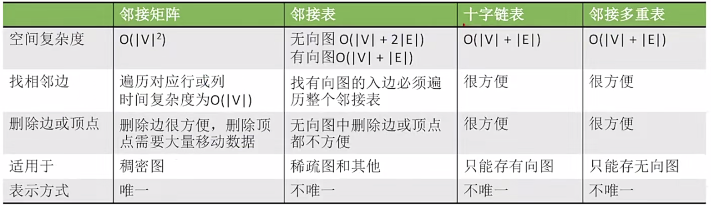
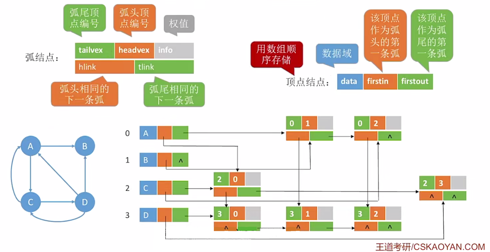
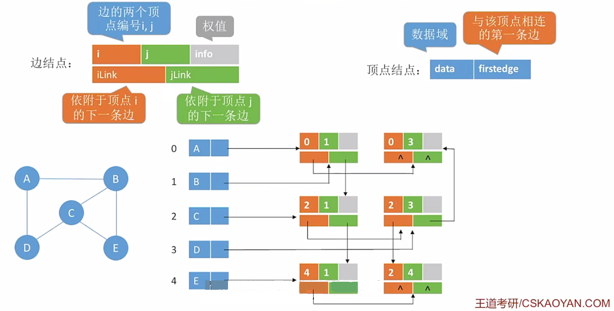
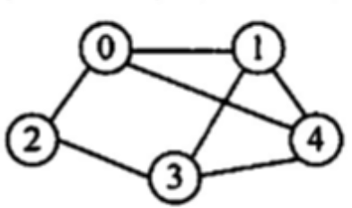

2022.12.12

/** 邻接矩阵（图）
*
* Author: Charles Shan
* Date: 2022.07.17
* Version: 1.0
*
* 内容包括:
* 邻接矩阵结点与邻接矩阵的定义
* UnWeightGraphInit 无权图初始化
* WeightGraphInit 带权图初始化
* GetWeight 获取边的权重
* AddNode 添加(指定下标)结点
* DeleteNode 删除(指定下标)节点
* AddEdgeDirected 添加有向边
* AddEdge 添加边
* PrintGraph 打印图
* FirstNeighbor 寻找第一个邻居的下标(没有返回0)
* NextNeighbor 寻找某邻居后的下一个邻居下标(没有返回0)
* FirstNeighborValue 寻找第一个邻居的下标(没有返回0)与值
* NextNeighborValue 寻找某邻居后的下一个邻居下标(没有返回0)与值
* GetVexnum 获取结点数
* GetIndegree 入度
* TestInit 构建测试图
*/
/**
* 定义
*
* EdgeElement 边元素
* GraphNode 结点
* MGraph 图
*
*/
#define EdgeElementNone 0 // 节点元素为空
#define EdgeElementInf -1 // 节点元素位无穷
#define MaxVerNum 50 // 邻接矩阵表示法中节点最大个数
#define EdgeWeight int // 边的权重默认为int
typedef struct EdgeElement
{
// Weight is the value of an Element
EdgeWeight weight;
// Others to be defind here
// ...
}EdgeElement;
typedef struct GraphNode
{
Element data; // 数据元素
bool valid; // 有效
}GraphNode;
typedef struct
{
GraphNode Vex[MaxVerNum]; // 顶点
EdgeElement Edge[MaxVerNum][MaxVerNum]; // 邻接矩阵
int vexnum,arcnum; // 图当前顶点数和边数/弧数
bool weight; // 是否为带权图
}MGraph;
int edge_ele_get_weight(EdgeElement e){
return e.weight;
}
void edge_ele_set_weight(EdgeElement &e,EdgeWeight weight){
e.weight = weight;
}
EdgeElement edge_ele_init(EdgeWeight weight){
EdgeElement e;
edge_ele_set_weight(e,weight);
return e;
}
void edge_ele_copy(EdgeElement &to, EdgeElement from){
edge_ele_set_weight(to,from.weight);
}
bool edge_ele_equal(EdgeElement e1, EdgeElement e2){
return e1.weight == e2.weight;
}
bool edge_ele_none(EdgeElement e){
return e.weight == EdgeElementNone;
}
bool edge_ele_inf(EdgeElement e){
return e.weight == EdgeElementInf;
}
/**
* 图的操作
*
*/
void UnWeightGraphInit(MGraph &G){
G.vexnum = 0;
G.arcnum = 0;
G.weight = false;
for(int i=0;i<MaxVerNum;i++){
G.Vex[i].valid = false;
for(int j=0;j<MaxVerNum;j++)
edge_ele_set_weight(G.Edge[i][j],EdgeElementNone);
}
}
void WeightGraphInit(MGraph &G){
G.vexnum = 0;
G.arcnum = 0;
G.weight = true;
for(int i=0;i<MaxVerNum;i++){
G.Vex[i].valid = false;
for(int j=0;j<MaxVerNum;j++)
edge_ele_set_weight(G.Edge[i][j],EdgeElementInf);
}
}
EdgeWeight GetWeight(MGraph G,int i,int j){
return edge_ele_get_weight(G.Edge[i][j]);
}
bool AddNode(MGraph &G,Element e){
int i = 1;
while(G.Vex[i].valid==true) i++;
if(i==MaxVerNum) return false;
ele_copy(G.Vex[i].data,e);
G.Vex[i].valid = true;
G.vexnum++;
return true;
}
void DeleteNode(MGraph &G,int x){
G.Vex[x].valid = false;
for(int i=1;i<MaxVerNum;i++){
edge_ele_set_weight(G.Edge[x][i],G.weight?EdgeElementInf:EdgeElementNone);
edge_ele_set_weight(G.Edge[i][x],G.weight?EdgeElementInf:EdgeElementNone);
}
G.vexnum--;
}
bool AddEdgeDirected(MGraph &G,int x,int y,EdgeElement value){
if(edge_ele_none(value)) return false;
edge_ele_copy(G.Edge[x][y],value);
return true;
}
bool AddEdge(MGraph &G,int x,int y,EdgeElement value){
if(edge_ele_none(value)) return false;
edge_ele_copy(G.Edge[x][y],value);
edge_ele_copy(G.Edge[y][x],value);
return true;
}
void PrintGraph(MGraph G){
int temp=0,templ=0,tempr=0;
// 上表头
printf(" ");
for(int i=1;i<G.vexnum+1;i++){
if(G.Vex[i+temp].valid==false){
temp++;
i--;
}else{
printf(" %2d",ele_get_weight(G.Vex[i+temp].data));
}
}
printf("\n |");
for(int i=1;i<G.vexnum+1;i++)
printf("---");
printf("\n");
// 内容与左表头
tempr=0;
for(int i=1;i<G.vexnum+1;i++){
if(G.Vex[i+tempr].valid==false){
tempr++;
i--;
continue;
}else
printf(" %d |",ele_get_weight(G.Vex[i+tempr].data));
templ=0;
for(int j=1;j<G.vexnum+1;j++){
if(G.Vex[j+templ].valid==false){
templ++;
j--;
continue;
}
if((i+tempr)==(j+templ))
printf(" \\");
else if(edge_ele_inf(G.Edge[i+tempr][j+templ]))
printf(" .");
else
printf(" %2d",GetWeight(G,i+tempr,j+templ));
}
printf("\n");
}
}
int FirstNeighbor(MGraph G,int v){
for(int i=1;i<G.vexnum+1;i++)
if(!edge_ele_none(G.Edge[v][i]) && !edge_ele_inf(G.Edge[v][i]) && G.Vex[i].valid)
return i;
return 0;
}
int NextNeighbor(MGraph G,int v, int h){
for(int i=h+1;i<G.vexnum+1;i++)
if(!edge_ele_none(G.Edge[v][i]) && !edge_ele_inf(G.Edge[v][i]) && G.Vex[i].valid)
return i;
return 0;
}
int FirstNeighborValue(MGraph G,int v,EdgeWeight &value){
for(int i=1;i<G.vexnum+1;i++)
if(!edge_ele_none(G.Edge[v][i]) && !edge_ele_inf(G.Edge[v][i]) && G.Vex[i].valid){
value = GetWeight(G,v,i);
return i;
}
return -1;
}
int NextNeighborValue(MGraph G,int v, int h,EdgeWeight &value){
for(int i=h+1;i<G.vexnum+1;i++)
if(!edge_ele_none(G.Edge[v][i]) && !edge_ele_inf(G.Edge[v][i]) && G.Vex[i].valid){
value = GetWeight(G,v,i);
return i;
}
return -1;
}
int GetVexnum(MGraph G){
return G.vexnum;
}
int GetIndegree(MGraph G,int n){
if(G.Vex[n].valid==false)
return -1;
int count=0;
for(int i=1;i<MaxVerNum;i++)
if(!edge_ele_none(G.Edge[i][n]) && !edge_ele_inf(G.Edge[i][n]) && G.Vex[i].valid)
count++;
return count;
}
void TestInit(MGraph &G){
// 初始化
//WeightGraphInit(G);
UnWeightGraphInit(G);
// 构建一些边与结点;
int temp[] = {1,2,3,4,5,6,7,8};
for(int i=0;i<sizeof(temp)/sizeof(temp[0]);i++)
AddNode(G,ele_build(temp[i]));
AddEdge(G,1,2,edge_ele_init(1));
AddEdge(G,2,6,edge_ele_init(1));
AddEdge(G,6,3,edge_ele_init(1));
AddEdge(G,6,7,edge_ele_init(1));
AddEdge(G,3,7,edge_ele_init(1));
AddEdge(G,3,4,edge_ele_init(1));
AddEdge(G,4,7,edge_ele_init(1));
AddEdge(G,4,8,edge_ele_init(1));
AddEdge(G,7,8,edge_ele_init(1));
PrintGraph(G);
printf(
"\n 1 - 2 3 - 4\n"
" | / | / |\n"
" 5 6 - 7 - 8\n");
}
typedef double FloydCost[MaxVerNum][MaxVerNum];
void GetFloWeight(MGraph G,FloydCost &Cost){
for(int i=1;i<GetVexnum(G)+1;i++)
for(int j=1;j<GetVexnum(G)+1;j++){
if(!edge_ele_none(G.Edge[i][j]) && !edge_ele_inf(G.Edge[i][j]))
Cost[i][j]=GetWeight(G,i,j);
}
}
typedef struct DijArray
{
bool final[MaxVerNum]; // 是否找到最短路径
double dist[MaxVerNum]; // 最短路径长度
int path[MaxVerNum]; // 路径前驱(-1表示未改变)
}DijArray;
void GetDijWeight(MGraph G,DijArray &Array,int n){
for(int i=1;i<GetVexnum(G)+1;i++)
if(!edge_ele_none(G.Edge[n][i]) && !edge_ele_inf(G.Edge[n][i])){
Array.dist[i]=GetWeight(G,n,i);
Array.path[i]=0;
}
}
void test_adjacency_matrix(){
printf("图(邻接矩阵)测试\n");
// 创造图
MGraph G;
TestInit(G);
// 获取邻居
int value = 0;
printf("\n获取3的第一个邻居 : %d\n",FirstNeighbor(G,3));
FirstNeighborValue(G,3,value);
printf("获取3的第一个邻居的值 : %d\n",value);
printf("获取3的下一个邻居 : %d\n",NextNeighbor(G,3,FirstNeighbor(G,3)));
NextNeighborValue(G,3,FirstNeighbor(G,3),value);
printf("获取3的下一个邻居的值 : %d\n",value);
// 测试入度
printf("结点3的入度 : %d \n",GetIndegree(G,3));
// 删除一些结点与边
printf("\n删除一些结点(2)与边(6,3):\n");
DeleteNode(G,2);
PrintGraph(G);
}
输出测试
图(邻接矩阵)测试
1 2 3 4 5 6 7 8
|------------------------
1 | \ 1 0 0 0 0 0 0
2 | 1 \ 0 0 0 1 0 0
3 | 0 0 \ 1 0 1 1 0
4 | 0 0 1 \ 0 0 1 1
5 | 0 0 0 0 \ 0 0 0
6 | 0 1 1 0 0 \ 1 0
7 | 0 0 1 1 0 1 \ 1
8 | 0 0 0 1 0 0 1 \
1 - 2 3 - 4
| / | / |
5 6 - 7 - 8
获取3的第一个邻居 : 4
获取3的第一个邻居的值 : 1
获取3的下一个邻居 : 6
获取3的下一个邻居的值 : 1
结点3的入度 : 3
删除一些结点(2)与边(6,3):
1 3 4 5 6 7 8
|---------------------
1 | \ 0 0 0 0 0 0
3 | 0 \ 1 0 1 1 0
4 | 0 1 \ 0 0 1 1
5 | 0 0 0 \ 0 0 0
6 | 0 1 0 0 \ 1 0
7 | 0 1 1 0 1 \ 1
8 | 0 0 1 0 0 1 \
/** 邻接矩阵（图）
*
* Author: Charles Shan
* Date: 2022.09.10
* Version: 2.0
*
* 内容包括:
* 邻接矩阵结点与邻接矩阵的定义
* UnWeightGraphInit 无权图初始化
* WeightGraphInit 带权图初始化
* GetWeight 获取边的权重
* AddNode 添加(指定下标)结点
* DeleteNode 删除(指定下标)节点
* AddEdgeDirected 添加有向边
* AddEdge 添加边
* PrintGraph 打印图
* FirstNeighbor 寻找第一个邻居的下标(没有返回0)
* NextNeighbor 寻找某邻居后的下一个邻居下标(没有返回0)
* FirstNeighborValue 寻找第一个邻居的下标(没有返回0)与值
* NextNeighborValue 寻找某邻居后的下一个邻居下标(没有返回0)与值
* GetVexnum 获取结点数
* GetIndegree 入度
* TestInit 构建测试图
*/
#define MaxVerNum 50
#define NONE 0
#define EdgeWeight int // 边的权重默认为int
typedef struct ArcNode
{
int adjvex; // 边/弧指向哪个节点
struct ArcNode *next; // 指向下一条弧的指针
EdgeWeight value; // 权值(默认为1)
// other info
}ArcNode;
typedef struct VNode{
Element data; // 顶点数据
ArcNode *first; // 第一条边/弧
//data
}VNode,LGraph[MaxVerNum],AdjList[MaxVerNum];
// 为了方便,Graph的第一个结点数据存放结点数量
bool AddEdgeDirected(AdjList &G,int x,int y,EdgeWeight value){
ArcNode *p = NULL;
ArcNode *q = NULL;
// 头插x-y
q = (ArcNode*)malloc(sizeof(ArcNode));
q->adjvex = y;
q->value = value;
p = G[x].first;
G[x].first = q;
G[x].first->next = p;
return true;
}
bool AddEdge(AdjList &G,int x,int y,EdgeWeight value){
AddEdgeDirected(G,x,y,value);
AddEdgeDirected(G,y,x,value);
return true;
}
bool AddNode(AdjList &G,Element data){
ArcNode *p = NULL;
int count = 1;
while(ele_get_weight(G[count].data)!=NONE){
count++;
}
G[count].data=data;
return true;
}
int FirstNeighbor(AdjList G,int v){
if(G[v].first==NULL)
return -1;
else
return G[v].first->adjvex;
}
int NextNeighbor(AdjList G,int v, int h){
ArcNode *p=G[v].first;
while(p!=NULL && p->adjvex!=h)
p=p->next;
if(p->next==NULL)
return -1;
else
return p->next->adjvex;
}
void PrintGraph(AdjList G){
ArcNode *p = NULL;
for(int i=1;i<MaxVerNum;i++){
if(ele_get_weight(G[i].data)!=NONE){
printf(" %d ",ele_get_weight(G[i].data));
if(G[i].first!=NULL)
printf("-> ");
for(p=G[i].first;p!=NULL;p=p->next)
printf("%d(%2d) ",p->adjvex,p->value);
printf("\n");
}
}
}
int GetVexnum(AdjList G){
return int(ele_get_weight(G[0].data));
}
void InitGraph(AdjList &G){
for(int i=0;i<MaxVerNum;i++){
ele_init(G[i].data,NONE);
G[i].first = NULL;
}
}
void TestInit(AdjList &G){
// 构建新图
InitGraph(G);
// 构建一些边与结点;
int temp[] = {1,2,3,4,5,6,7,8};
for(int i=0;i<sizeof(temp)/sizeof(temp[0]);i++)
ele_init(G[i+1].data,temp[i]);
ele_init(G[0].data,8);
//AddEdge(G,5,1,1);
AddEdge(G,1,2,1);
AddEdge(G,2,6,1);
AddEdge(G,6,3,1);
AddEdge(G,6,7,1);
AddEdge(G,3,7,1);
AddEdge(G,3,4,1);
AddEdge(G,4,7,1);
AddEdge(G,4,8,1);
AddEdge(G,7,8,1);
PrintGraph(G);
printf(
"\n 1 - 2 3 - 4\n"
" | / | / |\n"
" 5 6 - 7 - 8\n");
}
void test_adjacency_list()
{
printf("图(邻接表)测试\n");
LGraph G;
TestInit(G);
printf("\n获取5的第一个邻居 :%d\n",FirstNeighbor(G,5));
printf("获取3的第一个邻居 :%d\n",FirstNeighbor(G,3));
printf("获取3的第二个邻居 : %d\n",NextNeighbor(G,3,4));
printf("获取3的第三个邻居 : %d\n",NextNeighbor(G,3,7));
printf("获取3的第四个邻居 : %d\n",NextNeighbor(G,3,6));
printf("获取图的结点个数: %d\n",GetVexnum(G));
}
测试结果
图(邻接表)测试
1 -> 2( 1)
2 -> 6( 1) 1( 1)
3 -> 4( 1) 7( 1) 6( 1)
4 -> 8( 1) 7( 1) 3( 1)
5
6 -> 7( 1) 3( 1) 2( 1)
7 -> 8( 1) 4( 1) 3( 1) 6( 1)
8 -> 7( 1) 4( 1)
1 - 2 3 - 4
| / | / |
5 6 - 7 - 8
获取5的第一个邻居 :-1
获取3的第一个邻居 :4
获取3的第二个邻居 : 7
获取3的第三个邻居 : 6
获取3的第四个邻居 : -1
获取图的结点个数: 8

我的理解：
- 对于临接表而言，如果是有向图，找入边需要遍历所有内容。我们不如仿照临界表的出边，为入边也弄一串链表。这就是十字链表。
- 另外我们可以发现，十字链表的边结点和邻接矩阵位置一致！所以才横着的是出边，竖着的是入边！
- 因为是为了优化有向图找入边的问题的方案，所以十字链表当然是为了存储有向图。

我的理解：
- 临阶多重表是为无向图的邻接表存储需要多一倍的边提供的解决方案。所以临阶多重表存的是无向图。
- 事实上，仍然是利用了临阶矩阵的布局存放边结点。每一个左侧的图的结点引到右边的“矩阵式链表阵”里边去，剩下的关系就在这个“链表阵”里边完成了。
【答案】：B
【答案】：C
【答案】：D
【答案】：D
【答案】：B，D
【答案】：B
【答案】：B、B、D
【答案】：B
【答案】：A
若邻接表中有奇数个边表结点，则(） A图中有奇数个结点 B. 图中有偶数个结点 C.图为无向图 D.因为有向图
【答案】：D
在有向图的邻接表存储结构中，顶点v在边表中出现的次数是（） A. 项点v的度 B. 顶点v的出度 C. 顶点v的入度 D. 依附于顶点v的边数
【答案】：D -> C
n个顶点的无向图的邻接表最多有（）个边表结点。 A. n^2 B. n(n-1) C. n(n+1) D.n(n -1)/2
【答案】：D
假设有n个顶点、e条边的有向图用邻接表表示，则删除与某个顶点v相关的所有边的时间复杂度为（）. A. O(n) C.O(n+e) B. O(e) D. O(ne)
【答案】：C
对邻接表的叙述中，（）是正确的。 A. 无向图的邻接表中，第i个项点的度为第i个链表中结点数的两倍 B. 邻接表比邻接矩阵的操作更简便 C. 邻接矩阵比邻接表的操作更简便 D. 求有向图结点的度，必须遍历整个邻接表
【答案】：C -> D
邻接多重表是（）的存储结构。
A. 无向图 C无向因和有向图
B. 有向图 D.都不是
【答案】：A
十字链表是（）的存储结构。
A. 无向图 C无向因和有向图 B. 有向图 D.都不是
【答案】：B
【2015 统考真题】己知含有5个顶点的图G如下图所示。

请回答下列问题： 1）写出图G的邻接矩阵A（行、列下标从0开始）。 2）求A^2，矩阵A^2中位于0行3列元素值的含义是什么？ 3）若已知具有n（n≥2）个项点的图的邻接短阵为B，则Bm(2≤m≤n）中非零元素的的含义是什么？
| \ | 0 | 1 | 2 | 3 | 4 |
|---|---|---|---|---|---|
| 0 | 0 | 1 | 1 | 0 | 1 |
| 1 | 1 | 0 | 0 | 1 | 1 |
| 2 | 1 | 0 | 0 | 1 | 0 |
| 3 | 0 | 1 | 1 | 0 | 1 |
| 4 | 1 | 1 | 0 | 1 | 0 |
$$ \begin{matrix} 3&1&0&3&1\ 1&3&2&1&2\ 0&2&2&0&1\ 3&1&0&3&3\ 1&2&2&1&3 \end{matrix} $$
代表从结点0到结点3有三条两条边组成的路径。
【2021 统考真题】已知无向连通图G由顶点集V和边集E组成，|E|＞0，当G中度为奇数的顶点个数为不大于2的偶数时，G存在包含所有边且长度为|E|的路径（称为EL路径）。设图G采用邻接矩阵存储，类型定义如下：
typedef struct{//图的定义
//图中实际的顶点数和边数
int numVertices, numEdges;
//顶点表。MAxV 为已定义常量
char VerticesList[MAXV];
//邻接矩阵
int Edge [MAXV] [MAXV];
}MGraph;
请设计算法 int IsExistEL (MGraph G)，判断G是否存在旺路径，若存在，则返回1，否则返回0。要求：
1）给出算法的蒸本设计思想。
2，粮据设科思想，来角C或C++实现
3）说明你所设计算法的时间复杂度和空问复杂度
1. 利用邻接矩阵存储图，从头遍历每一个结点，计算结点的度，如果判断结点的度为奇数，设置的count计数变量加一。如果发现count>2，则返回0.遍历结束如果count为0或2则返回1，否则返回0
2. ```C
int IsExistEL (MGraph G){
int count = 0;
int flag=0;
for(int i=0;i<numVertices;i++){
for(int j=0;j<numVertices;j++)
if(G.Edge[i][j]==1) flag = !flag;
if(flag) count++;
if(count>2) return 0;
}
if(count==1) return 0;
return 1;
}
```
3. 时间复杂度：O(n^2)， 空间复杂度O(1)